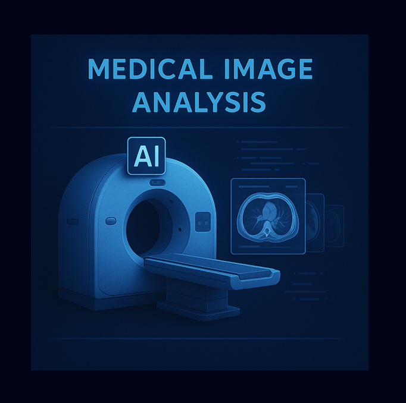

{kind=link}
{kind=link}
Portfólio
Uma das minhas missões como físico médico especialista em radioterapia é executar planejamentos de tratamento, nas mais diversas técnicas. Abaixo separei alguns dos casos mais interessantes ou desafiadores de teleterapia que eu planejei durante minha residência, tanto incluindo planejamentos diretos (3DCRT e arco dinâmico), quanto inversos (IMRT e VMAT). Não restringi meu portfolio apenas aos planejamentos, inclui também outros projetos, especialmente de programação que incluem inteligência artificial para saúde.
PLANEJAMENTO DE
TRATAMENTO
SBRT DE MÚLTIPLAS METÁSTASES PULMONARES COM GATING 30-70
PLANEJAMENTO VMAT Análise de Imagens
Médicas com IA

ZERO LEARNING PARA FUSÃO DE IMAGENS PET/MRI E SPECT/MRI DO CÉREBRO
Análise de Imagens Médicas com IA Análise de Imagens
Médicas com IA
ARQUITETURA GAN PARA AVALIAÇÃO MAMOGRÁFICA DE DENSIDADE MAMÁRIA
Análise de Imagens Médicas com IA
Análise de Imagens
Médicas com IA
DETECÇÃO DE ANOMALIAS INDICADORAS DE COVID 19 EM RAIO X DE TÓRAX COM TRANSFER LEARNING
Análise de Imagens Médicas com IA
DETECÇÃO DE ANOMALIAS INDICADORAS DE COVID 19 EM RAIO X DE TÓRAX COM TRANSFER LEARNING
Esse projeto, escrito em linguagem Python, aplica uma rede neural (Inception ResNet V2) pré-treinada para classificar imagens de radiografia em casos Covid e Não-Covid. Os dados foram obtidos do dataset BIMCV-COVID19, e são imagens rotuladas nas mais diversas patologias pulmonares. Em função do desbalanceamento de classe, os dados passaram por um oversampling com a função do Keras ImageDataGenerator e seus pesos foram computados. O modelo resultou nas seguintes métricas: precision, recall e f1-score.
Análise de Imagens Médicas com IA
Análise de Imagens
Médicas com IA
CNN-U-NET PARA SEGMENTAÇÃO DE MÚLTIPLOS ÓRGÃOS EM IMAGENS DE TOMOGRAFIA COMPUTADORIZADA
Análise de Imagens Médicas com IA
CNN-U-NET PARA SEGMENTAÇÃO DE MÚLTIPLOS ÓRGÃOS EM IMAGENS DE TOMOGRAFIA COMPUTADORIZADA
Esse projeto, escrito em linguagem Python, consiste no uso de uma Rede Neural Convolucional de arquitetura U-Net para segmentação de mais de um órgão em uma tomografia computadorizada de tórax. Os dados usados consistem em imagens anonimizadas de CT, com máscaras RGB para pulmão, coração e traqueia.
Análise de Imagens Médicas com IA
Análise preditiva com
Machine Learning
PIPELINE DE DEEP LEARNING PARA DETECÇÃO DE ECGS ANÔMALOS USANDO AUTOENCODER
Análise preditiva com Machine Learning
PIPELINE DE DEEP LEARNING PARA DETECÇÃO DE ECGS ANÔMALOS USANDO AUTOENCODER
Esse projeto, escrito em linguagem Python, consiste em usar autoencoders para classificar sinais de eletrocardiogramas (ECG). Trata-se de um tipo específico de rede neural projetada para compactar dados de entrada e decodifica-los em dados de saída semelhantes. Os dados de entrada usados para treinamento foram os ritmos cardíacos normais de um paciente com insuficiência cardíaca congestiva grave. Se o sinal de saída for muito diferente do de entrada, o sinal é classificado como anômalo.
Análise preditiva com Machine Learning